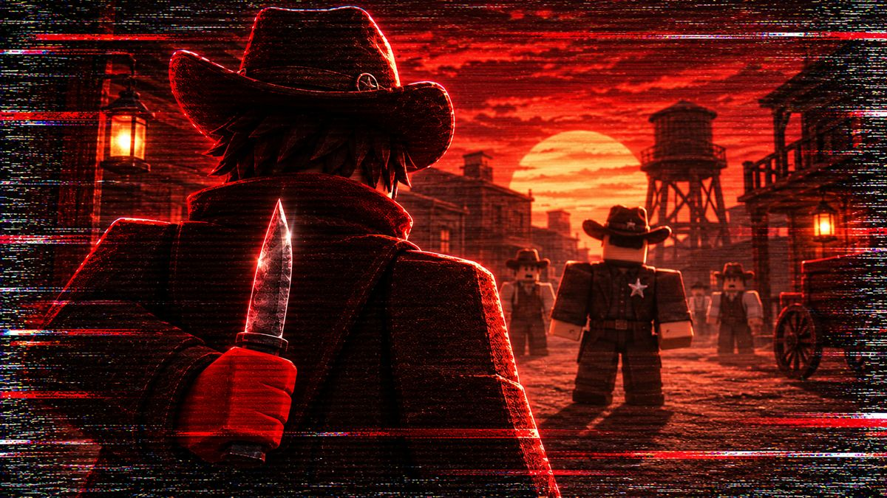

Wanted · Dead or alive
Outlaw
1 per round
Take out the whole town without getting caught. Blend in, pick your moment and keep your hands clean in public.
Carries: knife (stab or throw)
A western murder mystery. One Outlaw. One Marshal. A whole town of suspects. Find the killer before the lights go out.
Every round, new roles
When the round starts, you get one role in secret. Nobody else knows yours. Watch who runs, who hides and who stands too close.
Take out the whole town without getting caught. Blend in, pick your moment and keep your hands clean in public.
One revolver, one job. Find the Outlaw and end it. Shoot an innocent and you pay for it.
Survive, collect Casings and gather clues. If the Marshal falls, grab the revolver and finish the job yourself.
New · Advanced Mode
In Advanced rounds some townsfolk get a second, secret role. The town is warned that one is hiding, but never who.
Act guilty. Fake it. If the Marshal shoots you, you win the round alone and the Marshal falls for it.
Knows two names, and one of them is the Outlaw. Use TIP OFF once: the gun holder sees both suspects glow, but the Outlaw sees you glow too.
What makes it different
Static Blood takes the classic whodunit and adds weather, blackouts and a town radio that can crack the case open.
Bring lamps to the old radio and it broadcasts clues about the Outlaw. The Outlaw will try to break it first.
Dust storms, rain and power cuts change how every round plays. In the dark, anyone could be next to you.
A dropped revolver doesn't sit still forever. If nobody picks it up, it moves somewhere new.
The best Outlaw, Marshal and Townsfolk of each week stand on the podium in the lobby for everyone to see.
Trade knives, guns and effects with other players. Scammed? Trades can be reversed.
Spend your Casings on crates for knife and revolver skins, from common to godly.
Server-side hit checks and anti-cheat keep every round honest.
Big buttons for aim, throw and power. Plays well on phone, tablet and PC.

Just arrived in town?
Everyone who joins gets a head start.
Finish your first round and get 250 Casings for free.
Your first Casings crate costs half. Good luck on the roll.
Play before December 18 and keep the Founder badge on your profile for good.
Free rewards
Open the Codes menu in game, type the code exactly and press Redeem.
New codes drop on TikTok, YouTube and in the Discord first.
Incoming transmission
Twelve cold nights are coming to town. New map, new event, new godly set, and something that is not on the nice list. Founders get there first.
Signal arrives Dec 18
Ride with the posse
Updates, sneak peeks, giveaways and live streams where you can play with the developer.